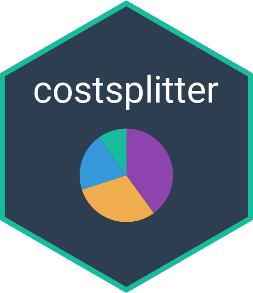

Process Share Data in a Data Frame
Source:R/helper_process_share.R
helper_process_share.RdThe helper_process_share function processes the share columns in a given data frame. It pivots the share columns into a long format, validates the data, and converts categorical share values into numeric equivalents. The function also replaces missing or empty values with 0.
Usage
helper_process_share(df = helper_check_names(df))Value
A tibble with three columns: name, activity, and share. The share values are transformed based on the rules provided, and the data is pivoted to a long format.
Details
The function performs the following steps:
Pivoting: Converts the wide format share columns into a long format with
activityandsharecolumns.Assertive Tests: Validates that the
sharecolumn contains only numeric values (0-1) or the specified categorical values ("full", "reduced", "half", "some").Conversion:
Converts categorical values ("full", "reduced", "half", "some") into numeric equivalents (1, 0.7, 0.5, 0.3).
Replaces
NAand empty values with 0.
Transformation: Ensures that the
sharecolumn is numeric and returns the modified data frame as a tibble.
See also
Other helper:
helper_check_names(),
helper_minimize_payments(),
helper_process_adjustment(),
helper_process_age(),
helper_process_name(),
helper_process_pay()
Examples
data("valid_trip_data", package = "costsplitter")
df <- valid_trip_data
data_share <- helper_process_share(df)